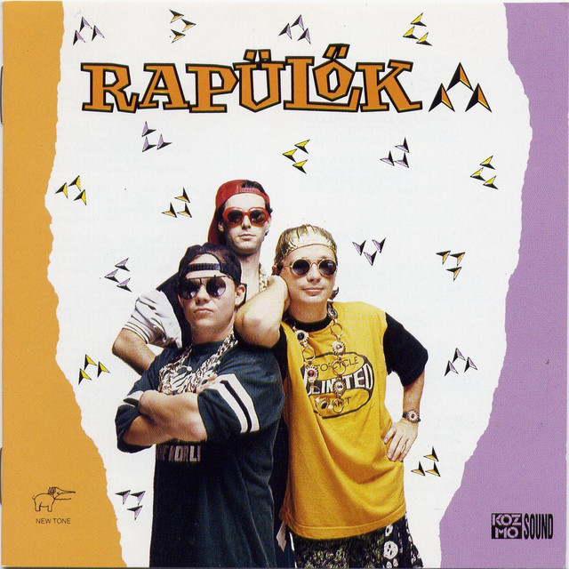

Rapülők
A Rapülők egy magyar – nevével ellentétben – hip-hop stílusokkal fűszerezett és általában jazz irányába vegyített akusztikus együttes, amelyet 1992-ben alapított Berkes Gábor (billentyűs hangszerek), Geszti Péter (ének, rap) és Szentmihályi Gábor (dobok). Az 1990-es évek elején két albumot készítettek, és az együttes 1994-ben, a csúcson feloszlott. Mindkét lemez átlépte a 200 000-es eladott példányszámot, így platinalemezek lettek. A két nagylemezből összesen több mint félmilliót adtak el. 1994-ben, a búcsúkoncerteken négyszer töltötték meg a Budapest Sportcsarnokot. Az együttes neve egy szójáték, a rappelő és a repülő összevonása.

Rapülők (album)
A Rapülők című album az azonos nevű együttes 1992-ben megjelent első albuma.
További információ
